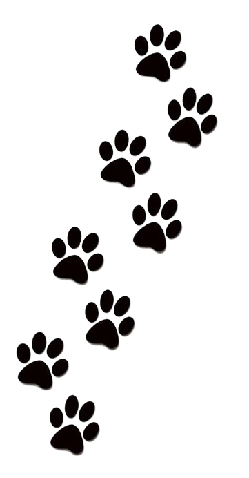
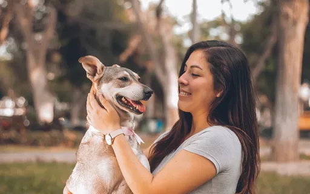
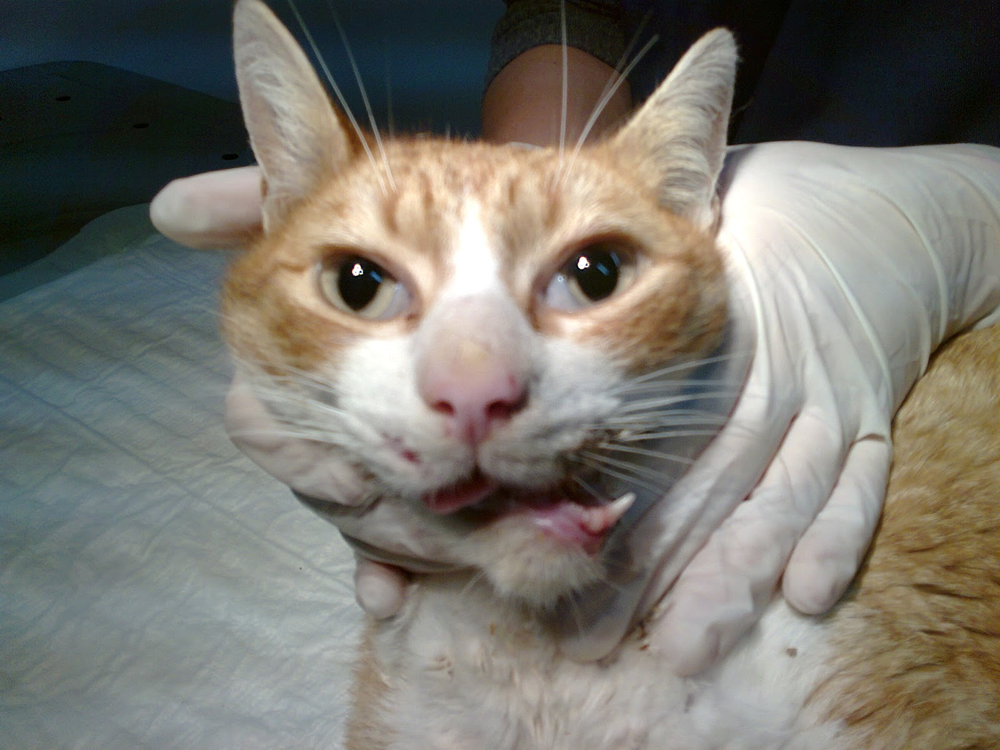
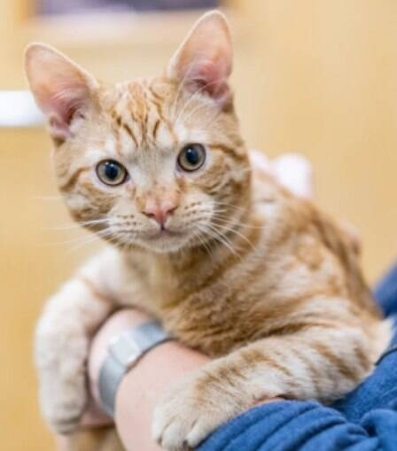
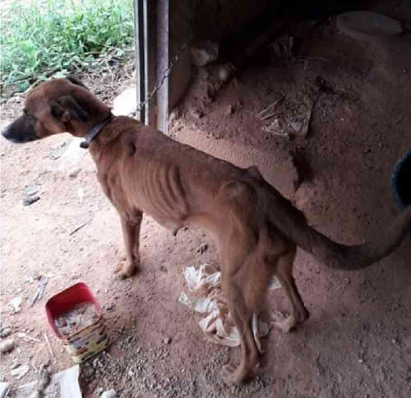

A ong Mão e Patas visa ajudar animais em situaçoes críticas de abandono ou em situações de rua
Não são apenas animais são vidinhas com 4 patas, a necessidade de segurança e carinho são válidos para todas e qualquer espécie.
Abaixo a ong retrata a história vivida por alguns dos animais acolhidos e um pouco dos projetos arrecadados pela própria organização Mãos e Patas


A ong Mãos e Patas é um projeto social que resgata todas as espécies de animais onde sofrem abandonos e maus tratos, atualmente a
ong tem 17 colaboradores frequentes porém as vezes não chega ser o bastante, pois a ong abriga 362 animais de rua ou em estado críticos.
Nossos anjinhos de 4 patas não precisam apenas de comida e sim de medicamentos também, Abaixo será retratado algumas situações.
História Shiva


Shiva foi uma gata de rua abandonada por seus antigos donos com sinais de maus tratos, foi encontrada por denuncias e ligações de
resgates para
a ong, foi encontrada com o maxilar totalmente desconfigurado. Shiva recebeu os cuidados arrecadados por doações para a ong, Hoje
Shiva se encontra com novos donos e recuperada de qualquer meio de maus tratos físicos ou mentais
História Margô

Margô foi uma cachorrinha na qual seu dono práticava Abusos e Maus tratos, infelizmente a história de margô foi denunciada
tarde demais, no resgate da cadelinha ela já não hávia mais forças para sobreviver por muitos dias e nem a ong havia todos
os medicamentos necessários para a recuperação dela, 4 dias após a imagem margô infelizmente morreu.
Para evitarmos Histórias semelhantes ao final de Margô nos ajude a continuar resgatando e ajudando Nossos anjinhos de 4 patas
Estams Presentes em feiras de doações localizados no Shopping Patteo olinda das 08:00 até as 18:00 de segunda ás quartas
Para arrecadarmos mantimentos e medicamentos aos animais
Finais Felizes
Sthefanny Procurou a ong Mãos e Patas no seu pior momento em fase depressiva, na ong ela conheceu o Kissúke, cachorro no qual
fez sua alegria e a tirou de fase depressiva, graças ao Kissúke hoje Sthefanny consegue sorrir novamente.
Sthefanny: Quando eu vi o Kissúke eu consegui me identificar com ele, quando vi ele pela primeira vez senti uma energia postiva na
qual eu sentia que faltava em mim.
Assim como Kissúke trouxe uma alegria para a Sthefanny, venha conhecer alguns de nossos animais pessoalmente, as vezes
um animal que precisa do seu afeto e carinho consegue se tornar a alegria da sua casa.